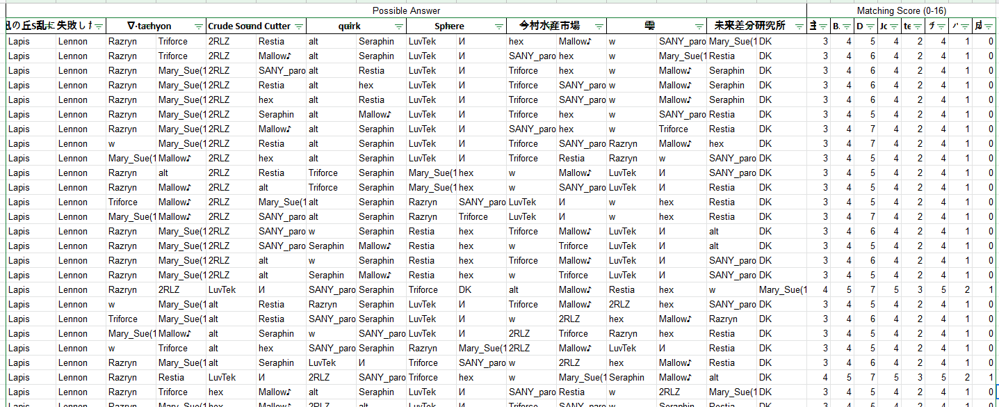
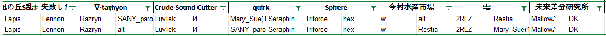

Mutual Fumen
Result
| Rank | Team | Members | Score | |
|---|---|---|---|---|
| 1 | Sphere Deep-B |
hex | Triforce | 312.8 |
| 2 | 雫 主催チーム |
2RLZ | Mary_Sue | 260.1 |
| 3 |
★11夕凪の丘S乱に失敗した猫さん 成歩堂龍一と真宵ちゃん |
Lapis | Lennon | 236.4 |
| 4 | quirk チームC |
SANY_paro | Seraphin | 223.5 |
| 5 | 今村水産市場 バカンス楽C!!なJK |
Restia | w | 216.2 |
| 6 | ∇⋅tachyon team.BS |
alt | Razryn | 189.6 |
| 7 | 未来差分研究所 Joker&Joker |
DK | Mallow♪ | 166.0 |
| 8 | Crude Sound Cutter B.S.K. (BMS差分協迫会) |
LuvTek | И | 19.7 |
Detailed Score
자세한 결과는 이쪽에서 볼 수 있습니다.
詳しい結果はこちらからご覧いただけます。
You can see the detailed results here.
ViewParticipant Review
Mary_Sue
잠깐 마트라도 다녀올까 했는데 비가 많이 내려서 쓰게 된
후기입니다.
머릿속에는 이런저런 할 이야기가 많이 있는데 막상 그걸 글의 형태로 옮기려니 쉽지가 않아 글이 두서가 없이 졸렬하다는 점은 양해를 부탁드립니다.
우선 약 2달 넘는 기간동안 차분 기획을 성공적으로 이끌어주신 M-SPIN님과 PARKSU님께 감사의 말씀을 드리고 싶습니다.
다른 점을 제쳐두더라도 이 점만큼은 이견의 여지 없는 업적이라고, 저는 생각합니다.
제가 두 분께서 진행하셨던 기획의 준비 과정을 전부 본 것은 아니며, 분명 제가 보고 들었던 것보다 몇 배는 더 고생하셨을 거라 확신합니다만
적어도 제가 알고 있는 범위 내에서만 보더라도 두 분은 상당한 노고를 아끼지 않으셨습니다.
기획에 참가하셨던 패터너 여러분들 그리고 기획에 관심을 가져주셨던 분들 덕에 많은 걸 배울 수 있었고,
이 귀중한 경험을 통해 패터너로서 용렬한 수준이었던 제가 그래도 조금이나마 발전할 수 있었는데 기획이 없었더라면 이런 기회 역시 없었겠지요.
원래 감사한 마음을 전달하는 것이 후기의 목적이었고,
이 목적을 성공적으로 달성하기 위해서는 아쉬운 말을 앞에다 쓰고 감사한 말을 뒤에다 쓰는 것이 좋았을 것입니다.
'저 사람은 성격은 좋은데 키가 작아' 보다 '저 사람은 키는 작지만 성격이 좋아'가 훨씬 긍정적으로 받아들여지는 것처럼 말이지요.
혹은 아쉬운 말 없이 좋은 말만 쓰고 마는 것도 하나의 방법이 될 수 있습니다.
하지만 M-SPIN님과 PARKSU님께서 이 차분기획에서의 경험을 바탕으로 추후에 다른 기획을 여실 수도 있고,
저와 그 두 분 사이에는 다크 차분 덕에 미미하게나마 연고가 있는 사이라고 (저 혼자 제멋대로) 생각하고 있으므로 아쉬운 말씀을 조금 드리고 싶습니다.
오히려 좋은 말만 적고 마는 것이 더 실례가 될 거라는 생각도 들기에, 실례를 무릅쓰고 감히 글을 적습니다.
... 사실 아쉬운 말만 적은 건 아니고, 제가 겪었던 경험과 느낌을 쭉 쓸 예정이라 좋은 말도 있을 거고 그냥 경험담도 있을 것입니다.
계속 무게를 잡으니 왠지 글이 뼈아픈 비평처럼 보이는 것 같아서 사족이라도 달아봅니다...
1. 기획의 방향성에 대해
홈페이지에 의하면 본 기획은 '자기 차분의 평가가 좋을수록, 자기 정체를 숨길수록, 다른 팀의 정체를 잘 맞출수록 높은 점수를 받는' 대회입니다.
자기 팀의 정체를 숨기는 것과 다른 팀의 정체를 잘 맞추는 것이 동전의 양면과 같은 표리관계라 사실상 같은 거라고 생각한다면
자기 특색을 드러내지 않고 차분을 잘 짜야 하는 대회라고도 할 수 있겠습니다.
(물론 개중에 Crude Sound Cutter 팀처럼 특색을 가감없이 드러낸 팀도 있지만 해당 팀의 정체는 주최팀이 유력하고
대회 구조상 주최팀은 높은 순위를 바라기 힘드므로, 정체를 숨기는 건 둘째치고 차분을 잘 짜는 것에 집중해야만 하는 상태였다고 봅니다.
그리고 차분 자체는 잘 만드셨으니 주어진 여건 내에서 최상의 결과를 낸 것이겠지요.)
최선의 길은 자기가 원래 짜던 스타일을 버리고 좋은 차분을 만드는 것이겠지요.
그렇지만 그게 썩 쉬운 일은 아니라, 어느 순간이 오면 두 가지 중 하나를 골라야 하는 상황이 됩니다.
정체를 숨기기 위해 자신의 방식을 버리고 다소 아쉬운 차분을 만들 것인가, 정체가 드러나는 걸 감수하고 자신의 방식대로 좋은 차분을 만들 것인가.
다행히 참가자분들은 한 가지 길만 선택하지 않고 각자 다른 선택을 해주셨습니다.
제출된 차분 중에선 상당히 퀄리티가 좋아서 패턴 자체의 점수는 높은데 팀원의 정체가 거의 드러난 차분도 있고,
퀄리티는 다소 아쉬운데 팀원의 정체가 거의 드러나지 않아 팀원 추측이 매우 갈리는 차분도 있었습니다.
저는 이 현상은 매우 좋다고 봤습니다. 둘 중 하나를 골라야 하는 기획의 방향성을 잘 드러낸 것 같아서요.
저희 팀이 제출한 차분은 아마 후자 쪽에 속할 것 같군요. 2RLZ님은 다재다능하신 분이라 여러가지 스타일을 다루실 수 있어서 큰 문제는 없었을 거라 생각합니다만,
저는 아무래도 실력도 부족하고, 그러는 와중에 나름대로 정형화된 스타일이 있어서 그걸 숨기기 위해 차분 제작과정에서 막히는 부분이 꽤 있었습니다.
분명 곡을 두 부분으로 나누어서 서로 비슷한 분량을 담당했건만 저는 3~4일 걸리는 양을 2RLZ님은 하루만에 완성하시는 걸 보고 확실히 차이가 있다는 걸 깨달았지요.
그래도 그 덕에 차분 퀄리티는 다소 아쉬웠지만 1차 차분 추측때 제출된 16개의 답안 중 단 1개만이 2RLZ님을 적어 정답을 이야기하고 있었습니다.
그나마도 제 이름은 하나도 없어서 '그래 성공했어!' 라는 생각이 들었습니다. 단 1개만이 정답이라는 점에서 이미 밝혀진 사실이지만,
사실 저도 1차 추측때는 저희팀의 정체를 틀리게 적었습니다. 저와 2RLZ님을 붙이지도 않았고, 그냥 아예 흩뿌려버렸습니다.
1차 추측은 정답 점수가 비교적 낮았기에, 아예 철저하게 숨기는 쪽이 팀에 더 이득을 가져다줄 것이라고 생각했기 때문입니다.
1차 추측에서 '메리수, 2RLZ'라는 매우매우 뜬금없는 조합이 대놓고 박혀있다면, 다른팀 팀원분들도 우선 의심부터 하고 볼 게 뻔하기 때문에
정답 점수를 대량으로 잃는 쪽을 선택했습니다.
그러는 와중에 저희팀 추론 명의도 '주최팀'이었기에, Crude Sound Cutter 팀이 'M-SPIN, PARKSU' 조합이라는 느낌이 강하게 들었지만
일부러 M-SPIN님과 PARKSU님도 엉뚱한 노래에다가 갖다 넣어버렸습니다. 추론 명의에서도 조금이나마 정보의 우위를 유지하고 싶어서였지요.
그렇지만 1차 추론 결과 발표과정에서 다소 문제가 발생했습니다.
2. 기획의 진행에 대해
팀별 정답 순위와, 각 팀이 다른 팀의 멤버를 어떻게 추측했는지 전부 드러냈다는 점이 그 문제라고 할 수 있겠습니다.
다행히 팀별 정답의 개수는 적혀져 있지 않아서 대참사는 피했습니다만, 사실 정답 순위가 공개된 시점에서 짜맞출 방법은 생겼지요.
Triforce님께서 방송에서 말씀하셨던 대로 1등팀의 답안을 기반으로 해서 자기 팀만이 알고 있는 정보를 추가하여 잘 조합한다면 적어도 중간 이상은 갈 것이며
발표된 순위를 기반으로 논리퍼즐을 짜맞춘다면 더 좋은 결과가 나오겠지요.
거기에 공동 2등팀도 3개나 나왔고, 2등팀들의 답안도 각각 달랐기에 정답 순위 공개는 악수였던 것 같습니다.
어떻게 보면 이 실책 하나 때문에 기획의 방향성과 취지도 흔들려버렸다고도 할 수 있겠습니다.
당장 저부터도 1차 차분은 직접 플레이해보고, 차분파일을 까서 무키음을 ZZ 키음으로 썼는지 ZX키음으로 썼는지 확인한 다음
참가자분들이 과거에 만들었던 차분을 열어서 비교해봤습니다. 심지어 리드미 파일에 뭔가 적혀있지 않을까 해서 일일이 확인하는 과정을 거쳤습니다만...
2차 차분은 그런 과정을 거치지 않았습니다.
물론 차분들의 평균 난이도가 급등한 것도 하나의 이유지만, 2RLZ님과 상담하는 과정에서 굳이 차분을 직접 하지 않아도 정답을 맞출 수 있다는 이야기가 나왔습니다.
그 이야기의 내용이 무엇이었냐 하면 저희팀과 주최팀이 어떤 패턴을 맡았는지는 당연히 알고, 모종의 사건 때문에 또다른 팀 하나의 담당패턴도 알게 되어서
총 3개의 팀의 구성을 알게 되었단 겁니다. 그러므로 나머지 5개 팀의 조합을 이리저리 돌려서 등수가 맞도록 수학적인(?) 추측을 한다면 좋은 결과를 낼 수 있겠지요.
만약 주어진 정보가 저희 팀 한 팀의 정체만이라면 제가 처음에 했던 방식대로 참가자들의 과거 차분을 추적해보는 게 가장 효율적이었을 겁니다.
하지만 주최팀의 정체가 비교적 명확해진 상태에서 이런저런 유출사고(?)도 있었고, 그 와중에 팀원 정답 순위까지 공개되니 그런 방식이 비효율적인게 되어버렸습니다.
이미 지나간 일이고, 익명 합작 차분대회가 당분간 또 열릴 것 같진 않습니다만 1차 차분 제출용 명의와 2차 차분 제출용 명의가 각각 달랐다면 최소한의 안전장치는
마련되지 않았을까? 하는 아쉬움이 남습니다. 차분 제출용 명의가 2개였더라면 1차 결과발표 때 순위가 공개되었더라도 추측이 훨씬 어려웠을테니까요.
유출사고에 관해서는 실책을 하신 분들을 탓할 필요는 없고, 주최측에서 자책할 필요도 없을 것 같습니다. 이벤트를 진행하다보면 으레 발생하는 천재지변같은 일이니
이 건은 어쩔 수 없을 것 같네요.
3. 차분을 제작하면서 있었던 일
2RLZ님과 협업을 하면서, 어떤 방식으로 했는지 말씀드리자면 다음과 같습니다. 1차 차분인 XROSS DIMENSION은 제가 후반부를 맡고, 2RLZ님이 전반부를 맡았습니다.
중간에 잠깐 노트가 안나오다가 롱노트를 잡으면서 단노트를 처리하는 부분이 나오는데, 거기부터가 제가 짠 곳입니다. 아무래도 후반에 킥음이 상당히 많이 나오고,
음계도 명확히 살아있는 파트라서, 축 + 음계에 맞춘 동시치기 형태로 만들어진 것 같습니다. 전반부와는 느낌이 다르게 만들어진 것 같아서 단조로움은 없을거라고
자부하고 있습니다. 전반부의 짧은 롱놋 때문에 전반부를 제가 맡은 거 아니냐고 하는 말도 나왔던 것 같은데, 사실 그건 전적으로 2RLZ님의 아이디어입니다.
후반에 스크래치 견제가 상당히 많이 나오는데, 제가 스크래치 견제를 좋아하다보니 정체를 들키지 않을까 걱정했습니다만,
다행히 스크래치 견제가 유니크한 패턴은 아니라 어찌저찌 잘 넘어간 것 같습니다. 추정 난이도는 st1 정도였는데, 최근에 st0으로 제안이 되었습니다.
그래도 1 차이 정도라면 그렇게 큰 차이는 아니니 제가 난이도 책정을 영 못하진 않은 것 같네요.
2차 차분 EAST GOLD는 1차와는 반대로 제가 전반을 맡고, 2RLZ님이 후반을 맡았습니다. 중간 변속 이전을 제가 맡았고, 변속부터는 2RLZ님의 파트입니다.
제가 한동안 채팅을 통해 시간이 너무 없어서 그냥 다 포기하고 놀아야겠다고 떠들고 다녔었는데, 이게 반쯤은 농담이 아니었습니다.
1차 결과가 발표된 이후 4일만에 2차 차분을 내야한다는 것을 정말로 모르고 있었고, 2RLZ님도 모르고 계셨던 것 같았기에 정말로 준비가 안되어있었습니다.
다행히 곡 선정은 맨 처음에 다 해놔서 선택단계에서부터 문제가 발생하지는 않았지만, 4일이라는 꽤 빡빡한 기한이 압박감으로 다가오긴 했습니다.
더구나 EAST GOLD가 차분 짜기에 그렇게 쉬운 곡은 아니어서, 이리저리 머리를 굴려본 결과 1차 차분과 비슷한 패턴으로 가야겠다는 결론에 이르렀습니다.
그리하여 전반부의 잡노트 섞인 음계동시치기 패턴이 완성되었고, 단조로움을 덜기 위해 롱노트를 조금 추가했습니다.
전반부에 스크래치음으로 넣고싶어지는 샘플링 키음이 많았습니다만, 의도적으로 스크래치의 활용을 줄였습니다.
1차때 나왔던 차분 중에 스크래치가 정말 어려웠던 패턴이 있었고, 그거 하느라 고생을 꽤나 해서 스크래치는 되도록이면 넣지 않으려고 마음을 먹은 상태여서...
그리고 2RLZ님이 후반은 스크래치를 활용하면서 건반이 어렵게 나오는, IIDX의 진 지옥초특급 같은 패턴을 만드실 예정이라고 말씀을 하셨기에
전반부만큼은 스크래치의 압박이 덜한 패턴을 만들려고 노력했습니다. 2RLZ님께서 후반부를 꽤 독창적으로, 그리고 1차 때와는 다른 모양으로 짜주셨기에
1차 차분의 짝퉁 같은 느낌은 좀처럼 들지 않았습니다만, 아무래도 제가 맡은 전반부가 1차 차분의 후반부와 비슷한 느낌을 주는 건 어쩔 수 없었으므로
점수 면에서 1차 차분보다 좋은 점수가 나오지 않았다고 생각합니다. 그래도 모양새 자체만 보면 그리 나쁘진 않았다고 생각합니다(?)
자화자찬 같지만, 원래 고슴도치도 자기 자식의 몸에 난 가시는 안따갑다고 하지 않습니까.
4. 결론
결국 이번 기획의 2개의 취지, 다시 말해 '다른 차분제작자들에게도 관심을 가져보자', 그리고 '좋은 차분을 만들어보자'는 취지들이 잘 지켜졌냐 하면
무조건 긍정할 수는 없겠습니다. 저희팀부터가 논리적으로 팀원들을 추론했는데 이게 다른 차분제작자들에게 관심을 돌리는 거라고 보긴 힘드니까 말이지요.
좋은 차분을 만들어보자는 취지 역시, 정체를 숨겨야 되는 과정에서 참가자들 기량의 100%를 끌어내는 건 불가능해졌고
패턴 점수의 비중이 그렇게 크지 않았으므로 잘 지켜지지 않았던 것 같습니다. 돌이켜보면 1등과 꼴등 패턴 점수의 차이가 20점 이내였던 대회였는데,
그 점수가 또 퍼센트 단위로 깎여나가니 최종적으로 패턴들 간의 점수 차이는 거의 의미가 없는 수준이 된 것 같습니다.
정체를 숨기는 거야 익명대회니까 피할 수 없는 운명이라 쳐도 패턴 점수의 비중이
더 높았더라면 아무래도 패턴쪽에 신경을 더 썼을 것 같은데, 아무래도 저도 인간인지라 비중이 비교적 적은 패턴 퀄리티 쪽에는 신경을 덜 쓰게 되더라고요.
1차 패턴(XROSS DIMENSION) 때 정체를 잘 숨겨서 2차 패턴(EAST GOLD) 때도 비슷한 패턴, 비슷한 난이도를 들고 나왔고 당연히 패턴 점수는 낮을 수 밖에 없겠죠.
요컨대 이번 기획은 두 마리 토끼를 잡으려다가, 두 마리 토끼를 전부 반으로 갈라 죽여버리는 바람에
한 마리 잡은 거랑 비슷한 성과를 남긴 기획이라는 느낌입니다. (1/2 + 1/2 = 1이니까...)
두 마리 모두를 놓치지 않고 한 마리라도 잡은 점을 긍정적으로 평가할 수도 있고, 한 마리 분량을 놓쳐버렸다는 점을 부정적으로 평가할 수도 있겠군요.
세상사가 100% 긍정적일 수도 없고, 100% 부정적일 수도 없으니 아쉬운 점은 다음 기획때 개선하면 되는 것이고, 좋은 점은 귀중한 경험으로 남겨두시면 될 것 같습니다.
다시 한 번 2달 넘는 기획을 이끌어주신 점에 대해 감사드리며 짧은 글을 마치도록 하겠습니다.
머릿속에는 이런저런 할 이야기가 많이 있는데 막상 그걸 글의 형태로 옮기려니 쉽지가 않아 글이 두서가 없이 졸렬하다는 점은 양해를 부탁드립니다.
우선 약 2달 넘는 기간동안 차분 기획을 성공적으로 이끌어주신 M-SPIN님과 PARKSU님께 감사의 말씀을 드리고 싶습니다.
다른 점을 제쳐두더라도 이 점만큼은 이견의 여지 없는 업적이라고, 저는 생각합니다.
제가 두 분께서 진행하셨던 기획의 준비 과정을 전부 본 것은 아니며, 분명 제가 보고 들었던 것보다 몇 배는 더 고생하셨을 거라 확신합니다만
적어도 제가 알고 있는 범위 내에서만 보더라도 두 분은 상당한 노고를 아끼지 않으셨습니다.
기획에 참가하셨던 패터너 여러분들 그리고 기획에 관심을 가져주셨던 분들 덕에 많은 걸 배울 수 있었고,
이 귀중한 경험을 통해 패터너로서 용렬한 수준이었던 제가 그래도 조금이나마 발전할 수 있었는데 기획이 없었더라면 이런 기회 역시 없었겠지요.
원래 감사한 마음을 전달하는 것이 후기의 목적이었고,
이 목적을 성공적으로 달성하기 위해서는 아쉬운 말을 앞에다 쓰고 감사한 말을 뒤에다 쓰는 것이 좋았을 것입니다.
'저 사람은 성격은 좋은데 키가 작아' 보다 '저 사람은 키는 작지만 성격이 좋아'가 훨씬 긍정적으로 받아들여지는 것처럼 말이지요.
혹은 아쉬운 말 없이 좋은 말만 쓰고 마는 것도 하나의 방법이 될 수 있습니다.
하지만 M-SPIN님과 PARKSU님께서 이 차분기획에서의 경험을 바탕으로 추후에 다른 기획을 여실 수도 있고,
저와 그 두 분 사이에는 다크 차분 덕에 미미하게나마 연고가 있는 사이라고 (저 혼자 제멋대로) 생각하고 있으므로 아쉬운 말씀을 조금 드리고 싶습니다.
오히려 좋은 말만 적고 마는 것이 더 실례가 될 거라는 생각도 들기에, 실례를 무릅쓰고 감히 글을 적습니다.
... 사실 아쉬운 말만 적은 건 아니고, 제가 겪었던 경험과 느낌을 쭉 쓸 예정이라 좋은 말도 있을 거고 그냥 경험담도 있을 것입니다.
계속 무게를 잡으니 왠지 글이 뼈아픈 비평처럼 보이는 것 같아서 사족이라도 달아봅니다...
1. 기획의 방향성에 대해
홈페이지에 의하면 본 기획은 '자기 차분의 평가가 좋을수록, 자기 정체를 숨길수록, 다른 팀의 정체를 잘 맞출수록 높은 점수를 받는' 대회입니다.
자기 팀의 정체를 숨기는 것과 다른 팀의 정체를 잘 맞추는 것이 동전의 양면과 같은 표리관계라 사실상 같은 거라고 생각한다면
자기 특색을 드러내지 않고 차분을 잘 짜야 하는 대회라고도 할 수 있겠습니다.
(물론 개중에 Crude Sound Cutter 팀처럼 특색을 가감없이 드러낸 팀도 있지만 해당 팀의 정체는 주최팀이 유력하고
대회 구조상 주최팀은 높은 순위를 바라기 힘드므로, 정체를 숨기는 건 둘째치고 차분을 잘 짜는 것에 집중해야만 하는 상태였다고 봅니다.
그리고 차분 자체는 잘 만드셨으니 주어진 여건 내에서 최상의 결과를 낸 것이겠지요.)
최선의 길은 자기가 원래 짜던 스타일을 버리고 좋은 차분을 만드는 것이겠지요.
그렇지만 그게 썩 쉬운 일은 아니라, 어느 순간이 오면 두 가지 중 하나를 골라야 하는 상황이 됩니다.
정체를 숨기기 위해 자신의 방식을 버리고 다소 아쉬운 차분을 만들 것인가, 정체가 드러나는 걸 감수하고 자신의 방식대로 좋은 차분을 만들 것인가.
다행히 참가자분들은 한 가지 길만 선택하지 않고 각자 다른 선택을 해주셨습니다.
제출된 차분 중에선 상당히 퀄리티가 좋아서 패턴 자체의 점수는 높은데 팀원의 정체가 거의 드러난 차분도 있고,
퀄리티는 다소 아쉬운데 팀원의 정체가 거의 드러나지 않아 팀원 추측이 매우 갈리는 차분도 있었습니다.
저는 이 현상은 매우 좋다고 봤습니다. 둘 중 하나를 골라야 하는 기획의 방향성을 잘 드러낸 것 같아서요.
저희 팀이 제출한 차분은 아마 후자 쪽에 속할 것 같군요. 2RLZ님은 다재다능하신 분이라 여러가지 스타일을 다루실 수 있어서 큰 문제는 없었을 거라 생각합니다만,
저는 아무래도 실력도 부족하고, 그러는 와중에 나름대로 정형화된 스타일이 있어서 그걸 숨기기 위해 차분 제작과정에서 막히는 부분이 꽤 있었습니다.
분명 곡을 두 부분으로 나누어서 서로 비슷한 분량을 담당했건만 저는 3~4일 걸리는 양을 2RLZ님은 하루만에 완성하시는 걸 보고 확실히 차이가 있다는 걸 깨달았지요.
그래도 그 덕에 차분 퀄리티는 다소 아쉬웠지만 1차 차분 추측때 제출된 16개의 답안 중 단 1개만이 2RLZ님을 적어 정답을 이야기하고 있었습니다.
그나마도 제 이름은 하나도 없어서 '그래 성공했어!' 라는 생각이 들었습니다. 단 1개만이 정답이라는 점에서 이미 밝혀진 사실이지만,
사실 저도 1차 추측때는 저희팀의 정체를 틀리게 적었습니다. 저와 2RLZ님을 붙이지도 않았고, 그냥 아예 흩뿌려버렸습니다.
1차 추측은 정답 점수가 비교적 낮았기에, 아예 철저하게 숨기는 쪽이 팀에 더 이득을 가져다줄 것이라고 생각했기 때문입니다.
1차 추측에서 '메리수, 2RLZ'라는 매우매우 뜬금없는 조합이 대놓고 박혀있다면, 다른팀 팀원분들도 우선 의심부터 하고 볼 게 뻔하기 때문에
정답 점수를 대량으로 잃는 쪽을 선택했습니다.
그러는 와중에 저희팀 추론 명의도 '주최팀'이었기에, Crude Sound Cutter 팀이 'M-SPIN, PARKSU' 조합이라는 느낌이 강하게 들었지만
일부러 M-SPIN님과 PARKSU님도 엉뚱한 노래에다가 갖다 넣어버렸습니다. 추론 명의에서도 조금이나마 정보의 우위를 유지하고 싶어서였지요.
그렇지만 1차 추론 결과 발표과정에서 다소 문제가 발생했습니다.
2. 기획의 진행에 대해
팀별 정답 순위와, 각 팀이 다른 팀의 멤버를 어떻게 추측했는지 전부 드러냈다는 점이 그 문제라고 할 수 있겠습니다.
다행히 팀별 정답의 개수는 적혀져 있지 않아서 대참사는 피했습니다만, 사실 정답 순위가 공개된 시점에서 짜맞출 방법은 생겼지요.
Triforce님께서 방송에서 말씀하셨던 대로 1등팀의 답안을 기반으로 해서 자기 팀만이 알고 있는 정보를 추가하여 잘 조합한다면 적어도 중간 이상은 갈 것이며
발표된 순위를 기반으로 논리퍼즐을 짜맞춘다면 더 좋은 결과가 나오겠지요.
거기에 공동 2등팀도 3개나 나왔고, 2등팀들의 답안도 각각 달랐기에 정답 순위 공개는 악수였던 것 같습니다.
어떻게 보면 이 실책 하나 때문에 기획의 방향성과 취지도 흔들려버렸다고도 할 수 있겠습니다.
당장 저부터도 1차 차분은 직접 플레이해보고, 차분파일을 까서 무키음을 ZZ 키음으로 썼는지 ZX키음으로 썼는지 확인한 다음
참가자분들이 과거에 만들었던 차분을 열어서 비교해봤습니다. 심지어 리드미 파일에 뭔가 적혀있지 않을까 해서 일일이 확인하는 과정을 거쳤습니다만...
2차 차분은 그런 과정을 거치지 않았습니다.
물론 차분들의 평균 난이도가 급등한 것도 하나의 이유지만, 2RLZ님과 상담하는 과정에서 굳이 차분을 직접 하지 않아도 정답을 맞출 수 있다는 이야기가 나왔습니다.
그 이야기의 내용이 무엇이었냐 하면 저희팀과 주최팀이 어떤 패턴을 맡았는지는 당연히 알고, 모종의 사건 때문에 또다른 팀 하나의 담당패턴도 알게 되어서
총 3개의 팀의 구성을 알게 되었단 겁니다. 그러므로 나머지 5개 팀의 조합을 이리저리 돌려서 등수가 맞도록 수학적인(?) 추측을 한다면 좋은 결과를 낼 수 있겠지요.
만약 주어진 정보가 저희 팀 한 팀의 정체만이라면 제가 처음에 했던 방식대로 참가자들의 과거 차분을 추적해보는 게 가장 효율적이었을 겁니다.
하지만 주최팀의 정체가 비교적 명확해진 상태에서 이런저런 유출사고(?)도 있었고, 그 와중에 팀원 정답 순위까지 공개되니 그런 방식이 비효율적인게 되어버렸습니다.
이미 지나간 일이고, 익명 합작 차분대회가 당분간 또 열릴 것 같진 않습니다만 1차 차분 제출용 명의와 2차 차분 제출용 명의가 각각 달랐다면 최소한의 안전장치는
마련되지 않았을까? 하는 아쉬움이 남습니다. 차분 제출용 명의가 2개였더라면 1차 결과발표 때 순위가 공개되었더라도 추측이 훨씬 어려웠을테니까요.
유출사고에 관해서는 실책을 하신 분들을 탓할 필요는 없고, 주최측에서 자책할 필요도 없을 것 같습니다. 이벤트를 진행하다보면 으레 발생하는 천재지변같은 일이니
이 건은 어쩔 수 없을 것 같네요.
3. 차분을 제작하면서 있었던 일
2RLZ님과 협업을 하면서, 어떤 방식으로 했는지 말씀드리자면 다음과 같습니다. 1차 차분인 XROSS DIMENSION은 제가 후반부를 맡고, 2RLZ님이 전반부를 맡았습니다.
중간에 잠깐 노트가 안나오다가 롱노트를 잡으면서 단노트를 처리하는 부분이 나오는데, 거기부터가 제가 짠 곳입니다. 아무래도 후반에 킥음이 상당히 많이 나오고,
음계도 명확히 살아있는 파트라서, 축 + 음계에 맞춘 동시치기 형태로 만들어진 것 같습니다. 전반부와는 느낌이 다르게 만들어진 것 같아서 단조로움은 없을거라고
자부하고 있습니다. 전반부의 짧은 롱놋 때문에 전반부를 제가 맡은 거 아니냐고 하는 말도 나왔던 것 같은데, 사실 그건 전적으로 2RLZ님의 아이디어입니다.
후반에 스크래치 견제가 상당히 많이 나오는데, 제가 스크래치 견제를 좋아하다보니 정체를 들키지 않을까 걱정했습니다만,
다행히 스크래치 견제가 유니크한 패턴은 아니라 어찌저찌 잘 넘어간 것 같습니다. 추정 난이도는 st1 정도였는데, 최근에 st0으로 제안이 되었습니다.
그래도 1 차이 정도라면 그렇게 큰 차이는 아니니 제가 난이도 책정을 영 못하진 않은 것 같네요.
2차 차분 EAST GOLD는 1차와는 반대로 제가 전반을 맡고, 2RLZ님이 후반을 맡았습니다. 중간 변속 이전을 제가 맡았고, 변속부터는 2RLZ님의 파트입니다.
제가 한동안 채팅을 통해 시간이 너무 없어서 그냥 다 포기하고 놀아야겠다고 떠들고 다녔었는데, 이게 반쯤은 농담이 아니었습니다.
1차 결과가 발표된 이후 4일만에 2차 차분을 내야한다는 것을 정말로 모르고 있었고, 2RLZ님도 모르고 계셨던 것 같았기에 정말로 준비가 안되어있었습니다.
다행히 곡 선정은 맨 처음에 다 해놔서 선택단계에서부터 문제가 발생하지는 않았지만, 4일이라는 꽤 빡빡한 기한이 압박감으로 다가오긴 했습니다.
더구나 EAST GOLD가 차분 짜기에 그렇게 쉬운 곡은 아니어서, 이리저리 머리를 굴려본 결과 1차 차분과 비슷한 패턴으로 가야겠다는 결론에 이르렀습니다.
그리하여 전반부의 잡노트 섞인 음계동시치기 패턴이 완성되었고, 단조로움을 덜기 위해 롱노트를 조금 추가했습니다.
전반부에 스크래치음으로 넣고싶어지는 샘플링 키음이 많았습니다만, 의도적으로 스크래치의 활용을 줄였습니다.
1차때 나왔던 차분 중에 스크래치가 정말 어려웠던 패턴이 있었고, 그거 하느라 고생을 꽤나 해서 스크래치는 되도록이면 넣지 않으려고 마음을 먹은 상태여서...
그리고 2RLZ님이 후반은 스크래치를 활용하면서 건반이 어렵게 나오는, IIDX의 진 지옥초특급 같은 패턴을 만드실 예정이라고 말씀을 하셨기에
전반부만큼은 스크래치의 압박이 덜한 패턴을 만들려고 노력했습니다. 2RLZ님께서 후반부를 꽤 독창적으로, 그리고 1차 때와는 다른 모양으로 짜주셨기에
1차 차분의 짝퉁 같은 느낌은 좀처럼 들지 않았습니다만, 아무래도 제가 맡은 전반부가 1차 차분의 후반부와 비슷한 느낌을 주는 건 어쩔 수 없었으므로
점수 면에서 1차 차분보다 좋은 점수가 나오지 않았다고 생각합니다. 그래도 모양새 자체만 보면 그리 나쁘진 않았다고 생각합니다(?)
자화자찬 같지만, 원래 고슴도치도 자기 자식의 몸에 난 가시는 안따갑다고 하지 않습니까.
4. 결론
결국 이번 기획의 2개의 취지, 다시 말해 '다른 차분제작자들에게도 관심을 가져보자', 그리고 '좋은 차분을 만들어보자'는 취지들이 잘 지켜졌냐 하면
무조건 긍정할 수는 없겠습니다. 저희팀부터가 논리적으로 팀원들을 추론했는데 이게 다른 차분제작자들에게 관심을 돌리는 거라고 보긴 힘드니까 말이지요.
좋은 차분을 만들어보자는 취지 역시, 정체를 숨겨야 되는 과정에서 참가자들 기량의 100%를 끌어내는 건 불가능해졌고
패턴 점수의 비중이 그렇게 크지 않았으므로 잘 지켜지지 않았던 것 같습니다. 돌이켜보면 1등과 꼴등 패턴 점수의 차이가 20점 이내였던 대회였는데,
그 점수가 또 퍼센트 단위로 깎여나가니 최종적으로 패턴들 간의 점수 차이는 거의 의미가 없는 수준이 된 것 같습니다.
정체를 숨기는 거야 익명대회니까 피할 수 없는 운명이라 쳐도 패턴 점수의 비중이
더 높았더라면 아무래도 패턴쪽에 신경을 더 썼을 것 같은데, 아무래도 저도 인간인지라 비중이 비교적 적은 패턴 퀄리티 쪽에는 신경을 덜 쓰게 되더라고요.
1차 패턴(XROSS DIMENSION) 때 정체를 잘 숨겨서 2차 패턴(EAST GOLD) 때도 비슷한 패턴, 비슷한 난이도를 들고 나왔고 당연히 패턴 점수는 낮을 수 밖에 없겠죠.
요컨대 이번 기획은 두 마리 토끼를 잡으려다가, 두 마리 토끼를 전부 반으로 갈라 죽여버리는 바람에
한 마리 잡은 거랑 비슷한 성과를 남긴 기획이라는 느낌입니다. (1/2 + 1/2 = 1이니까...)
두 마리 모두를 놓치지 않고 한 마리라도 잡은 점을 긍정적으로 평가할 수도 있고, 한 마리 분량을 놓쳐버렸다는 점을 부정적으로 평가할 수도 있겠군요.
세상사가 100% 긍정적일 수도 없고, 100% 부정적일 수도 없으니 아쉬운 점은 다음 기획때 개선하면 되는 것이고, 좋은 점은 귀중한 경험으로 남겨두시면 될 것 같습니다.
다시 한 번 2달 넘는 기획을 이끌어주신 점에 대해 감사드리며 짧은 글을 마치도록 하겠습니다.
2RLZ
요 몇 달간 색다르면서도 즐거운 경험이었습니다.
이 이벤트로 인해 새로운 사람과 같이 작업을 하며, 또한 추리와 로또를 즐길 수 있는 좋은 기회였던 것 같습니다.
한편, 개인적인 사정으로 인해 시간이 부족하여 차분 제작과 추리에 최선을 다하지 못한 점이 아쉬움으로 남습니다.
다음에 기회가 닿는다면, 최선을 다하는 모습을 보여드리도록 노력하겠습니다.
그럼, 아무쪼록 잘 부탁드립니다!
이 이벤트로 인해 새로운 사람과 같이 작업을 하며, 또한 추리와 로또를 즐길 수 있는 좋은 기회였던 것 같습니다.
한편, 개인적인 사정으로 인해 시간이 부족하여 차분 제작과 추리에 최선을 다하지 못한 점이 아쉬움으로 남습니다.
다음에 기회가 닿는다면, 최선을 다하는 모습을 보여드리도록 노력하겠습니다.
그럼, 아무쪼록 잘 부탁드립니다!
Triforce
반갑습니다. Sphere 팀의 멤버인 Triforce입니다.
hex 씨와 팀을 이뤄 차분을 만들게 되어 상당히 재미있는 시간이었습니다.
팀명인 Sphere는 제가 선정했습니다.
Triforce(3) + hex(6) = 9 인것을 생각하여, 9와 연관된 단어 중에 선정했습니다.
그 중에서 Sphere = 구(球)는 일본어와 한국어의 발음 모두 숫자 9와 동일한 것을 노려 선택했습니다.
1회전의 ナツイノ [涼風]는 hex씨를 중심으로 제작되었습니다.
전반부를 제가, 후반부를 hex씨가 담당했습니다.
처음에 요청사항이 끊어치기였던 만큼 끊어치기를 열심히 구상했었는데 역시 hex씨의 패턴 구상 능력이 대단하더라구요.
저는 구상하다가 머리에서 막혀서 연타를 일정 박자에 투입하는 것으로 제작했습니다.
다행히 다들 재밌어하셨는지 패턴 단독 1등 점수를 받아서 만족했었습니다.
더군다나 공개 이후 빠르게 satellite에 제안되어서 감사하게 생각하고 있습니다. 감사합니다 SANY씨!
2회전의 Animatronics [Freddy]는 제가 중심을 잡고 제작했습니다.
이전 1회전에서도 난이도가 어느 정도 있었다는 것을 염두에 두어, 저레벨 패턴과 평소에 제작하고 싶었던 OXYGEN 씨의 Animatronics를 선곡했습니다.
차분명은 당연히 Five Nights at Freddy's의 그 무서운 곰돌이 애니매트로닉스 이름에서 따왔습니다.
패턴은 1회전과 반대로 hex씨가 전반부, 제가 후반부를 담당했습니다.
곡의 미묘한 박자를 타격감으로 넘기고자 평소에 자주 사용하던 모양 대신 양손의 타격감 위주로 배치했습니다.
이 패턴 역시 다른 분들이 좋은 점수를 주셔서 감사하게 생각하고 있습니다!
좋은 이벤트 덕분에 재밌는 시간이었고, 패턴 제작자들을 다양하게 볼 수 있는 좋은 기회가 있었던 것 같습니다.
예전에 비해 패턴을 만드시는 분이 적어지기도 했지만, 이런 이벤트가 있어서 아직 BMS의 패턴을 만드는 사람들이 있는 게 아닌가 생각합니다. 다들 고생하셨습니다!
hex 씨와 팀을 이뤄 차분을 만들게 되어 상당히 재미있는 시간이었습니다.
팀명인 Sphere는 제가 선정했습니다.
Triforce(3) + hex(6) = 9 인것을 생각하여, 9와 연관된 단어 중에 선정했습니다.
그 중에서 Sphere = 구(球)는 일본어와 한국어의 발음 모두 숫자 9와 동일한 것을 노려 선택했습니다.
1회전의 ナツイノ [涼風]는 hex씨를 중심으로 제작되었습니다.
전반부를 제가, 후반부를 hex씨가 담당했습니다.
처음에 요청사항이 끊어치기였던 만큼 끊어치기를 열심히 구상했었는데 역시 hex씨의 패턴 구상 능력이 대단하더라구요.
저는 구상하다가 머리에서 막혀서 연타를 일정 박자에 투입하는 것으로 제작했습니다.
다행히 다들 재밌어하셨는지 패턴 단독 1등 점수를 받아서 만족했었습니다.
더군다나 공개 이후 빠르게 satellite에 제안되어서 감사하게 생각하고 있습니다. 감사합니다 SANY씨!
2회전의 Animatronics [Freddy]는 제가 중심을 잡고 제작했습니다.
이전 1회전에서도 난이도가 어느 정도 있었다는 것을 염두에 두어, 저레벨 패턴과 평소에 제작하고 싶었던 OXYGEN 씨의 Animatronics를 선곡했습니다.
차분명은 당연히 Five Nights at Freddy's의 그 무서운 곰돌이 애니매트로닉스 이름에서 따왔습니다.
패턴은 1회전과 반대로 hex씨가 전반부, 제가 후반부를 담당했습니다.
곡의 미묘한 박자를 타격감으로 넘기고자 평소에 자주 사용하던 모양 대신 양손의 타격감 위주로 배치했습니다.
이 패턴 역시 다른 분들이 좋은 점수를 주셔서 감사하게 생각하고 있습니다!
좋은 이벤트 덕분에 재밌는 시간이었고, 패턴 제작자들을 다양하게 볼 수 있는 좋은 기회가 있었던 것 같습니다.
예전에 비해 패턴을 만드시는 분이 적어지기도 했지만, 이런 이벤트가 있어서 아직 BMS의 패턴을 만드는 사람들이 있는 게 아닌가 생각합니다. 다들 고생하셨습니다!
Lapis
원래 이벤트를 참가하려는 생각은 없었지만, 기획이 참신해서
참가하게 되었습니다.
하지만 막상 참여하게 되니 싱글 채보를 만든지가 오래되어서 걱정이 밀려오더군요.
그 뒤 팀이 결정이 되고 이벤트의 일정을 보게 되었습니다.
Lennon씨는 이전에 이름을 들어본 적이 있는 분이었지만, Lennon씨의 채보 스타일에 대해서는 잘 모르고 있었기 때문에 조금 걱정이 있었습니다.
그리고 이벤트 일정으로는 한 달 내에 2개의 차분을 만들어야 했는데, 최근에는 이 정도로 빠른 템포로 차분을 만든 적이 최근 거의 없었기 때문에 더더욱이 걱정이 되었고요.
우선 팀명을 정하기 위해서 Lennon씨와 의논을 했는데, 채보용 팀명인 "★11夕凪の丘S乱に失敗した猫さん"는 제가 즉석에서 떠올린 팀명이었습니다.
최근에 지인 중에서 ★11의 夕凪の丘의 하드 클리어로 괴로워하던 사람이 있어서 S-Random을 추천했었는데, 그 경험을 바탕으로 제안했습니다.
가능한 한 의미 없으면서 웃긴 팀명을 짓고 싶었기 때문에 제안했는데, Lennon씨가 흔쾌히 수락해주셨습니다.
Lennon씨도 비슷하게 의미 없는 팀명을 생각해주셔서, 추론용 팀명으로 역전재판의 "成歩堂龍一と真宵ちゃん"이 채택되었습니다.
채보 제작의 경우 각자 곡을 하나씩 정해 오기로 했습니다. Lennon씨가 1차 제출용으로 "Citrus Sunset"을, 제가 2차 제출용으로 "テウメッサ"를 제안했습니다. 그리고 채보 제작의 경우 곡을 여러 개의 파트로 나눈 뒤 각자의 파트를 제작하는 방법으로 결정했습니다.
Citrus Sunset의 경우 7월 31일에 Lennon씨가 파트 분할안과 함께 자신의 파트를 작성한 채보 파일을 보내주셨습니다.
그런데 당시 제가 정신적인 문제로 정신이 없어서, 8월 4일이 되어서야 급하게 제 파트를 작성해서 보내드리게 되었습니다. 그리고 8월 5일에 GLAssist로 밀도를 체크하고 밸런스를 수정해 제출하게 되었습니다.
차분명은 Lennon씨의 제안으로 "meow"가 되었습니다. 팀명에 "猫さん"이 들어가 있었기 때문입니다.
이 채보의 파트 분할안은 다음 영상에서 확인하실 수 있습니다.
저는 그 뒤로 저녁에 먹었던 약의 부작용으로 인해 잠을 자버렸는데, 자고 일어나니 11시 45분이 되어있었습니다.
다행히도, Lennon씨가 저로부터 응답이 없는 것을 확인하고 10시 경에 임의로 작성해서 제출해주셨습니다. 추론 결과는 꼴등이었지만, 이 일은 전적으로 제 잘못입니다. Lennon님, 정말로 죄송합니다...
テウメッサ의 경우, 제출일 바로 전날부터 작성하기 시작했습니다. 그리고 제출 당일에 급하게 완성하게 되었습니다. 또 Lennon씨에게 폐를 끼쳐버렸습니다.
차분명은 Lennon씨의 제안으로 "にゃーん"이 되었습니다. 이것의 의미는 "にゃーん(社会性フィルター)"이니, 모르는 분이라면 검색해서 확인해보시길 빕니다.
テウメッサ의 분할안은 Citrus Sunset과 다르게 '가능하면 같은 부분은 같은 파트로 묶자'고 생각해, 16소절씩 파트를 나눴습니다.
저는 1차 추론 결과로부터 가능한 정답을 구하는 프로그램을 작성해 그 결과를 Lennon씨에게 공유했습니다.
이 경우 2차 추론의 결과를 보고, '자신의 팀에 대해서는 정상적으로 투표했을 것이다' 라는 가정 하에 작성했고, 유일한 정답이 나오는 것을 확인했습니다. 이것을 Lennon씨에게 보고하고 제출했습니다. 이렇게 마지막 추론까지 마무리하게 되었습니다. 👏👏👏
채보를 제작하면서 저 혼자서 Citrus Sunset에 소비한 시간은 2시간 정도, テウメッサ에 소비한 시간은 5시간 정도라고 생각합니다.
이렇게 적게 시간을 소비한 것은 오랜만이라서 솔직히 평가가 괜찮을 것이라는 생각은 하지 않았습니다. 특히 현재 사용하는 키보드가 BMS 플레이에 적합하지 않아서, 테스트 플레이는 전적으로 Lennon씨에게 맡겨버렸습니다.
하지만 1차 추론에서 66점, 2차 추론에서 70점이라는 생각보다 후한 점수를 받게 되어서 정말 기뻤습니다. 높은 임프레션 점수를 주신 분들에게 감사의 말씀을 드립니다.
또한 채보를 제작하면서, Lennon씨의 스타일이 저와 많이 닮았다는 것을 느꼈습니다.
만약 스타일이 다른 사람과 같이 작업하게 되었다면 괴로운 부분이 있었겠지만, Lennon씨의 파트가 정말 마음에 들었기 때문에 레고처럼 간단히 서로 이어붙여서 완성할 수 있었습니다.
정말 좋은 경험이었고, 앞으로 기회가 있다면 Lennon씨와 함께 또 합작을 해보고 싶다고 생각합니다.
만약 다음에 또 이런 이벤트가 있으면 참여할지 모르겠습니다.
채보를 만드는 것에 의욕이 많이 없는 상태이기도 하고, 팀원에 대한 걱정이 다소 앞서는 것도 사실입니다.
하지만 이번 이벤트는 정말 즐거운 경험이었습니다. Lennon씨에게 다시 한 번 죄송하고, 정말로 감사합니다. 그리고 참여하신 여러분들 모두 수고하셨습니다.
하지만 막상 참여하게 되니 싱글 채보를 만든지가 오래되어서 걱정이 밀려오더군요.
그 뒤 팀이 결정이 되고 이벤트의 일정을 보게 되었습니다.
Lennon씨는 이전에 이름을 들어본 적이 있는 분이었지만, Lennon씨의 채보 스타일에 대해서는 잘 모르고 있었기 때문에 조금 걱정이 있었습니다.
그리고 이벤트 일정으로는 한 달 내에 2개의 차분을 만들어야 했는데, 최근에는 이 정도로 빠른 템포로 차분을 만든 적이 최근 거의 없었기 때문에 더더욱이 걱정이 되었고요.
우선 팀명을 정하기 위해서 Lennon씨와 의논을 했는데, 채보용 팀명인 "★11夕凪の丘S乱に失敗した猫さん"는 제가 즉석에서 떠올린 팀명이었습니다.
최근에 지인 중에서 ★11의 夕凪の丘의 하드 클리어로 괴로워하던 사람이 있어서 S-Random을 추천했었는데, 그 경험을 바탕으로 제안했습니다.
가능한 한 의미 없으면서 웃긴 팀명을 짓고 싶었기 때문에 제안했는데, Lennon씨가 흔쾌히 수락해주셨습니다.
Lennon씨도 비슷하게 의미 없는 팀명을 생각해주셔서, 추론용 팀명으로 역전재판의 "成歩堂龍一と真宵ちゃん"이 채택되었습니다.
채보 제작의 경우 각자 곡을 하나씩 정해 오기로 했습니다. Lennon씨가 1차 제출용으로 "Citrus Sunset"을, 제가 2차 제출용으로 "テウメッサ"를 제안했습니다. 그리고 채보 제작의 경우 곡을 여러 개의 파트로 나눈 뒤 각자의 파트를 제작하는 방법으로 결정했습니다.
Citrus Sunset의 경우 7월 31일에 Lennon씨가 파트 분할안과 함께 자신의 파트를 작성한 채보 파일을 보내주셨습니다.
그런데 당시 제가 정신적인 문제로 정신이 없어서, 8월 4일이 되어서야 급하게 제 파트를 작성해서 보내드리게 되었습니다. 그리고 8월 5일에 GLAssist로 밀도를 체크하고 밸런스를 수정해 제출하게 되었습니다.
차분명은 Lennon씨의 제안으로 "meow"가 되었습니다. 팀명에 "猫さん"이 들어가 있었기 때문입니다.
이 채보의 파트 분할안은 다음 영상에서 확인하실 수 있습니다.
그리고 1차 추론 제출날, 오후 8시쯤 급하게 Lennon씨를 호출했지만 응답이 없었습니다.
저는 그 뒤로 저녁에 먹었던 약의 부작용으로 인해 잠을 자버렸는데, 자고 일어나니 11시 45분이 되어있었습니다.
다행히도, Lennon씨가 저로부터 응답이 없는 것을 확인하고 10시 경에 임의로 작성해서 제출해주셨습니다. 추론 결과는 꼴등이었지만, 이 일은 전적으로 제 잘못입니다. Lennon님, 정말로 죄송합니다...
テウメッサ의 경우, 제출일 바로 전날부터 작성하기 시작했습니다. 그리고 제출 당일에 급하게 완성하게 되었습니다. 또 Lennon씨에게 폐를 끼쳐버렸습니다.
차분명은 Lennon씨의 제안으로 "にゃーん"이 되었습니다. 이것의 의미는 "にゃーん(社会性フィルター)"이니, 모르는 분이라면 검색해서 확인해보시길 빕니다.
テウメッサ의 분할안은 Citrus Sunset과 다르게 '가능하면 같은 부분은 같은 파트로 묶자'고 생각해, 16소절씩 파트를 나눴습니다.
2차 추론의 경우 1차 추론의 미스를 만회하고자 추론 제출일로부터 일주일 일찍 8월 23일부터 논의하게 되었습니다.
저는 1차 추론 결과로부터 가능한 정답을 구하는 프로그램을 작성해 그 결과를 Lennon씨에게 공유했습니다.

그리고 각 사람의 이전 채보들을 보고 스타일을 분석하고, 가능한 답을 추려나갔습니다. 그 결과 2개의 정답 후보를 구했고, 아마 Mary_sue님이 quirk팀일 것이라는 가정 하에 위쪽의 답을 고르게 되었습니다. (솔직히 각각 정답일 확률은 6:4 정도라고 생각했습니다)
마지막 추론의 경우도 프로그램을 작성했습니다.이 경우 2차 추론의 결과를 보고, '자신의 팀에 대해서는 정상적으로 투표했을 것이다' 라는 가정 하에 작성했고, 유일한 정답이 나오는 것을 확인했습니다. 이것을 Lennon씨에게 보고하고 제출했습니다. 이렇게 마지막 추론까지 마무리하게 되었습니다. 👏👏👏
채보를 제작하면서 저 혼자서 Citrus Sunset에 소비한 시간은 2시간 정도, テウメッサ에 소비한 시간은 5시간 정도라고 생각합니다.
이렇게 적게 시간을 소비한 것은 오랜만이라서 솔직히 평가가 괜찮을 것이라는 생각은 하지 않았습니다. 특히 현재 사용하는 키보드가 BMS 플레이에 적합하지 않아서, 테스트 플레이는 전적으로 Lennon씨에게 맡겨버렸습니다.
하지만 1차 추론에서 66점, 2차 추론에서 70점이라는 생각보다 후한 점수를 받게 되어서 정말 기뻤습니다. 높은 임프레션 점수를 주신 분들에게 감사의 말씀을 드립니다.
또한 채보를 제작하면서, Lennon씨의 스타일이 저와 많이 닮았다는 것을 느꼈습니다.
만약 스타일이 다른 사람과 같이 작업하게 되었다면 괴로운 부분이 있었겠지만, Lennon씨의 파트가 정말 마음에 들었기 때문에 레고처럼 간단히 서로 이어붙여서 완성할 수 있었습니다.
정말 좋은 경험이었고, 앞으로 기회가 있다면 Lennon씨와 함께 또 합작을 해보고 싶다고 생각합니다.
만약 다음에 또 이런 이벤트가 있으면 참여할지 모르겠습니다.
채보를 만드는 것에 의욕이 많이 없는 상태이기도 하고, 팀원에 대한 걱정이 다소 앞서는 것도 사실입니다.
하지만 이번 이벤트는 정말 즐거운 경험이었습니다. Lennon씨에게 다시 한 번 죄송하고, 정말로 감사합니다. 그리고 참여하신 여러분들 모두 수고하셨습니다.
Restia
개인 소감
처음에는 “나도 참가해도 되는걸까?” 라는 생각을 했습니다만 이번이 아니면 합작할 기회가 없을것같아 참여하였습니다.
이번 팀의 유래는 아기공룡 둘리의 고길동의 "명동으로 갈까요?"를 일본어로 들리면 나오는 "今村蟹廻王"의 "今村"에서 따왔습니다. (그래서 일본어 이외로 번역할 때 금촌보다는 길동을 씁니다.)
수산시장은 가운데 한자가 게를 뜻해서, 그걸로 엮었습니다.
두 패턴다 Satellite,Stella 제안되었습니다. 제안해주신분께 감사드립니다.
그리고 좋은 경험을 시켜주신 LuvTek님 И님께 감사드립니다.
P.S : 사실 본명의는 제가 인삿말에 언급한 성우의 캐릭터에서 따왔습니다.?? : 저질이군.. 쳐라!!!
패턴 트리비아
sea blue,sky blue는 원래 Prismrose 대격변 시즌 2 찍어서 스크 있는 부분을 거의 빅장으로 도배할 예정이었고 토탈치도 지금의 2/3정도였습니다.
이차분은 제가 전반적으로 제가 베이스를 마련하였고, w님이 보강해주셨습니다.
w님이 보강해주신 부분은 #01~25,#34~49였고 나머지 부분도 피드백 해주셨습니다.
이 차분은 토탈치 숫자드립은 없습니다.
springfield의 원래제목은 before to summer to breeze(산들바람)와 shock and awe losers(충격과 공포다 xxx들아)
둘중에 하나가 될 예정이었습니다만 (후자는 그 밈에 나오는 마을 이름이 springfield였습니다.)
w님의 센스있는 제목명인 end of spring으로 지어졌습니다. 마지막 봄과 여름 사이를 이어주는 느낌을 받아 이쪽으로 선정되었습니다..
사실 이 패턴 짤때 몇가지 개인적인 룰이 있었습니다. (w님 구간 일부 미적용)
사실 드르륵(딜레이)부분은 어느정도 재조정 했습니다. 즉, 원래대로 했다면 그 부분은 더 어려워질 예정이었습니다.
Springfield는 차후 같은 조합으로 다시합작하여 하위호환 패턴들을 만들예정입니다.
사정상 일본어는 적지 못하였습니다…. (T_T)
처음에는 “나도 참가해도 되는걸까?” 라는 생각을 했습니다만 이번이 아니면 합작할 기회가 없을것같아 참여하였습니다.
이번 팀의 유래는 아기공룡 둘리의 고길동의 "명동으로 갈까요?"를 일본어로 들리면 나오는 "今村蟹廻王"의 "今村"에서 따왔습니다. (그래서 일본어 이외로 번역할 때 금촌보다는 길동을 씁니다.)
수산시장은 가운데 한자가 게를 뜻해서, 그걸로 엮었습니다.
두 패턴다 Satellite,Stella 제안되었습니다. 제안해주신분께 감사드립니다.
그리고 좋은 경험을 시켜주신 LuvTek님 И님께 감사드립니다.
P.S : 사실 본명의는 제가 인삿말에 언급한 성우의 캐릭터에서 따왔습니다.
패턴 트리비아
sea blue,sky blue는 원래 Prismrose 대격변 시즌 2 찍어서 스크 있는 부분을 거의 빅장으로 도배할 예정이었고 토탈치도 지금의 2/3정도였습니다.
이차분은 제가 전반적으로 제가 베이스를 마련하였고, w님이 보강해주셨습니다.
w님이 보강해주신 부분은 #01~25,#34~49였고 나머지 부분도 피드백 해주셨습니다.
이 차분은 토탈치 숫자드립은 없습니다.
springfield의 원래제목은 before to summer to breeze(산들바람)와 shock and awe losers(충격과 공포다 xxx들아)
둘중에 하나가 될 예정이었습니다만 (후자는 그 밈에 나오는 마을 이름이 springfield였습니다.)
w님의 센스있는 제목명인 end of spring으로 지어졌습니다. 마지막 봄과 여름 사이를 이어주는 느낌을 받아 이쪽으로 선정되었습니다..
사실 이 패턴 짤때 몇가지 개인적인 룰이 있었습니다. (w님 구간 일부 미적용)
- 빅장 최대한 자제하기 (소위 말하는 S+1234567, The Dxxxx ox Lxxxxxxx)
- 재봉틀 연타 금지
- 드르륵(딜레이) 부분과 일그러짐(즈레) 부분을 최대한 사용 할것
- #00~32 Restia
- #33~49 w
- #50~93 Restia
- #94~106 w
사실 드르륵(딜레이)부분은 어느정도 재조정 했습니다. 즉, 원래대로 했다면 그 부분은 더 어려워질 예정이었습니다.
Springfield는 차후 같은 조합으로 다시합작하여 하위호환 패턴들을 만들예정입니다.
사정상 일본어는 적지 못하였습니다…. (T_T)
Seraphin
LuvTek
기획 의도 및 과정
저는 BOFXV 차분기획을 즈음해서 약 4년만에 BMS를 복귀, BcE’G 서버 가입 이후 총 3개의 BcE’G 주최 차분기획에 참가하였습니다.
참가하면서 여러 차분도 만들어보고, 다른 서버 내 차분 제작자 분과 대화도 하는 좋은 경험을 하였습니다.
다만, 서버 회원 간의 교류는 진행이나 기술적 문제 보고 등에 한정된 느낌이었고, 차분 제작 과정 혹은 제작된 차분의 피드백의 교류 및 토의는 별로 하지 못해 아쉬웠습니다.
따라서 합작과 함께 다른 차분 제작자들을 알아가는 차분 기획을 주최하면 좋겠다고, 1998to2020 기획에 제출할 차분을 제작하면서 생각하였습니다.
합작을 통해 다른 회원 한 분과 차분에 대한 깊은 논의를 하는 것도 좋지만, 다른 많은 회원 분들의 차분 특성을 알아가는 것도 재밌는 과정이 될 수 있다고 생각하였습니다.
이러한 동기를 주기 위해서는 경쟁 요소를 넣는 것이 좋다 생각하였고, 점수 체계를 고안하였습니다. 다만, 기획을 진행할 적절한 시기는 찾지 못하였고 여름방학 즈음에 진행하면 좋겠다고 2-3개월 정도 방치해두었습니다.
서버 관리자님이 4월 즈음에 7월에 진행할 차분 기획이 있다고 공지하였지만, 7월에 특별한 공지가 없기에 문의한 결과 7월엔 계획이 없고 보다 조금 늦게 연다고 알려주셔서 7월에 급하게 인원모집과 함께 홍보를 시작하였습니다.
이와 함께 И님이 과거에 World Training Festival을 진행한 DARKSABUN 회장을 사용하는 것이 좋겠다고 하셨으며, 홍보 문구를 포함해 사이트를 개설해주셨습니다.
그리고 최대한 많은 사람의 모집을 위해 Mary_Sue(147889)님께 일어 번역을 부탁드렸고, 영어 번역은 초기에는 제가 하였지만 이후 Seraphin님이 자발적으로 진행 규칙을 번역해주셨습니다.
И님이 접속 국가별로 다른 언어가 표기되도록 코드를 작성해주셔서 홍보의 접근성이 매우 좋아졌고, 덕분에 처음에는 16명을 모으지 못할까 걱정을 많이 했지만 이러한 분들의 노력과 참가자분들의 관심 덕분에 짧은 모집기간임에도 인원모집을 성공적으로 하지 않았나 합니다.
팀 배정 영상
★11夕凪の丘S乱に失敗した猫さん (Lapis, Lennon)
Citrus Sunset [meow]
Future Teknology [500kV]
저의 팀이기에 리뷰보다는 제작후기에 더 가깝습니다.
Mythical Magic과 ad infinitum은 모두 팀 발표 직후 (7/23) 곡을 선정하여 키음을 자르고, 7/27에 완성했습니다.
실제 배포시에는 주최 팀인것이 너무 티나지 않도록 수정일자를 편집했지만은 별로 무의미했던 것 같습니다.
Mythical Magic [Miaplacidus]
제가 이 팀의 차분 두 개 모두 10점을 부여했기에, B.S.K. 팀이 quirk 팀인줄 알았다는 분도 계셨습니다.
quirk라는 이름에 맞게 두 차분 모두 기묘하지만 재밌는 차분을 제출해주셨습니다.
零ファイター [S]
ナツイノ [涼風]
두 차분 모두 2020년에 열린 최신 이벤트 출신 곡으로 제출한 팀입니다. 어쩌면 오래된 곡들을 가져온 CSC와 정반대에 있는 팀이 아닐까 싶네요.
Sea blue, sky blue -summer vacation-
XROSS DIMENSION (相互交差)
Life is PIANO [未来差分研究所]
최종 결과로 이동
Sphere (Deep-B)팀이 우승하였습니다. 축하드립니다.
이 팀은 1차 결과를 토대로 가능한 답안을 스크립트로 모두 구한 다음에, 제출된 차분과 차분 제작자의 스타일을 모두 조사하면서 최종답안을 결정했다고 합니다.
팀원인 hex님이 난이도표 수록곡 이외에도, 업로더나 개인 차분 사이트에 업로드된 거의 모든 싱글 차분을 플레이했기에 좋은 센스로 추론을 한 것이 아닌가 생각합니다.
★11夕凪の丘S乱に失敗した猫さん 팀 또한 동일하게 2차 추론을 진행하여 높은 정답률을 보여주었지만, 아쉽게도 모든 답을 맞추지는 못했습니다. 약간의 위로의 뜻을 전합니다.
패턴 평가 점수가 총점에 유의미한 변화를 주길 바랬지만, 점수 분배를 너무 crude하게 해서 주최 의도를 벗어난 점이 아쉽습니다.
급하게 진행했기 때문에, 기획 진행에 대해 참가자의 의견을 충분히 묻지 못했기 때문에 벌어진 일 같습니다. 다음에 점수제 차분 기획을 도입한다면, 인원 모집 공고부터 기획 세부 논의까지 여유있게 진행하여 기획 의도와 더 알맞는 점수 체계를 만들었으면 합니다.
저는 BOFXV 차분기획을 즈음해서 약 4년만에 BMS를 복귀, BcE’G 서버 가입 이후 총 3개의 BcE’G 주최 차분기획에 참가하였습니다.
참가하면서 여러 차분도 만들어보고, 다른 서버 내 차분 제작자 분과 대화도 하는 좋은 경험을 하였습니다.
다만, 서버 회원 간의 교류는 진행이나 기술적 문제 보고 등에 한정된 느낌이었고, 차분 제작 과정 혹은 제작된 차분의 피드백의 교류 및 토의는 별로 하지 못해 아쉬웠습니다.
따라서 합작과 함께 다른 차분 제작자들을 알아가는 차분 기획을 주최하면 좋겠다고, 1998to2020 기획에 제출할 차분을 제작하면서 생각하였습니다.
합작을 통해 다른 회원 한 분과 차분에 대한 깊은 논의를 하는 것도 좋지만, 다른 많은 회원 분들의 차분 특성을 알아가는 것도 재밌는 과정이 될 수 있다고 생각하였습니다.
이러한 동기를 주기 위해서는 경쟁 요소를 넣는 것이 좋다 생각하였고, 점수 체계를 고안하였습니다. 다만, 기획을 진행할 적절한 시기는 찾지 못하였고 여름방학 즈음에 진행하면 좋겠다고 2-3개월 정도 방치해두었습니다.
서버 관리자님이 4월 즈음에 7월에 진행할 차분 기획이 있다고 공지하였지만, 7월에 특별한 공지가 없기에 문의한 결과 7월엔 계획이 없고 보다 조금 늦게 연다고 알려주셔서 7월에 급하게 인원모집과 함께 홍보를 시작하였습니다.
이와 함께 И님이 과거에 World Training Festival을 진행한 DARKSABUN 회장을 사용하는 것이 좋겠다고 하셨으며, 홍보 문구를 포함해 사이트를 개설해주셨습니다.
그리고 최대한 많은 사람의 모집을 위해 Mary_Sue(147889)님께 일어 번역을 부탁드렸고, 영어 번역은 초기에는 제가 하였지만 이후 Seraphin님이 자발적으로 진행 규칙을 번역해주셨습니다.
И님이 접속 국가별로 다른 언어가 표기되도록 코드를 작성해주셔서 홍보의 접근성이 매우 좋아졌고, 덕분에 처음에는 16명을 모으지 못할까 걱정을 많이 했지만 이러한 분들의 노력과 참가자분들의 관심 덕분에 짧은 모집기간임에도 인원모집을 성공적으로 하지 않았나 합니다.
팀 배정 영상
차분 리뷰
★11夕凪の丘S乱に失敗した猫さん (Lapis, Lennon)
Citrus Sunset [meow]
- BPM 173, NOTES 2025, TOTAL 400, JUDGERANK EASY, ★1-2?
-
1차 제출된 차분 중에서 유일하게 발광 저난이도이기에 가치가
크다고 생각합니다.
선곡도 이러한 난이도의 차분이 없었던 무난한 Kawaii metal이라 마음에 듭니다.
패턴은 일렉기타음에 맞춘 LN의 활용이 인상적입니다. 음계를 따르는 pluck음의 축과, 무슨 음을 연주하는지 명확한 샘플링 스크래치도 즐거운 요소입니다.
후반은 표기 난이도보다 조금 어렵지만, 음계를 지키면서도 모양이 괜찮은 기타음 난타와, 격양되는 킥음에 맞춰서 점점 어려워지는 배치가 좋았다고 생각합니다.
이러한 레벨대의 난이도를 저는 잘 측정하지 못하지만, 후반과 조금 낮은 토탈 값을 고려하면 ★3에 더 가까웠다고 생각합니다.
- BPM 165, NOTES 2822, TOTAL 560, JUDGERANK EASY, ★16-18?
-
이 곡은 저도 차분을 만들었던 곡이기에 흥미로웠습니다.
현재 차분의 난이도 분포가 ★10-11?, sl6?, ★21?, st3, st6? 와 같기 때문에 난이도도 기존 차분과 중복되지 않게 잘 선정된 것 같습니다.
저는 장르명 TECHNO STRESS와 같이 쉬는 구간이 없는 잡연타 차분을 만들어서, 이 차분도 체력적으로 부담되지 않을까 생각했지만 예상보다 많이 상냥한 전개여서 새로운 느낌이었습니다.
곡의 후반으로 갈수록 밀도가 전체적으로 높아지만, 곡 전체로 보자면 8마디 단위로 쉬운 구간과 어려운 구간이 교대로 배치되어서 완급조절이 잘 되었다고 생각합니다.
16마디 단위로 등장하는 발광도 무리한 즈레나 연타 없이 무난한 변형데님이나 계단 형태로 배치되었기에 곡의 느낌을 살리면서도 플레이하면서의 스트레스를 최소화했다고 생각합니다.
조금 높은 BPM이지만, 중반에 쉬는 구간이 있어 체력적인 부담도 크지 않고, 노트의 배치 자체도 24비트 스크래치를 제외하면 개인차가 큰 구간 없이 무난하다고 생각합니다.
따라서 추정난이도는 제출된 것보다 조금 낮은 ★14 정도로 생각합니다.
Future Teknology [500kV]
- BPM 175, NOTES 2618, TOTAL 500, JUDGERANK EASY, ★20?
-
스크래치가 400장으로 매우 많습니다만, 대부분 연주하는 음이
명확하고 건반부의 밀도도 높기 때문에 스크래치 견제
패턴이라고 생각합니다. 오히려 BM보다는 KB 쪽이 수월할 수도
있겠습니다.
곡 중간을 기점으로 전반은 스크래치가, 후반은 난타가 메인이기에 들기에 KB 입장에서는 전반을 버티고 후반서 바짝 회복해야 하는 느낌입니다. 전반의 멜로디와 보컬 샘플링을 오가는 스크래치 음의 할당이 인상적입니다.
개인적으로 이러한 패턴 하나 정도는 괜찮으므로 즐겁게 플레이할 수 있었습니다. 추정 난이도는 매기기 어렵지만 테크닉보다는 지력에 치중된 ★20 Blacksphere 느낌이라고 생각합니다.
- BPM 195, NOTES 3632, TOTAL 750, JUDGERANK EASY, ★★5? (st9?)
-
빠른 속도의 세로연타가 지속적으로 나와 아직 인류가
도전하기에는 무리인 패턴 같습니다.
분명 곡의 전개에 따라 완급조절이 있고, 회복할 수 있는 구간도 중반에 있지만, 후반이 최소 ★★6급은 되는 것 같아 추정난이도나 배치가 좋았는지의 여부는 평가하기가 어렵습니다.
확실한 건 주최를 포함한 참가자들에게 웃음을 선사해줬으니, 이러한 초고난이도 패턴 하나 정도는 나쁘지 않았다고 생각합니다.
저의 팀이기에 리뷰보다는 제작후기에 더 가깝습니다.
Mythical Magic과 ad infinitum은 모두 팀 발표 직후 (7/23) 곡을 선정하여 키음을 자르고, 7/27에 완성했습니다.
실제 배포시에는 주최 팀인것이 너무 티나지 않도록 수정일자를 편집했지만은 별로 무의미했던 것 같습니다.
Mythical Magic [Miaplacidus]
- BPM 176, NOTES 3020, TOTAL 453, JUDGERANK NORMAL, ★23?
-
제가 И님에게 추천한 곡입니다. 21-27, 37-43마디를 제외한
나머지 부분을 제가 작업하고, 해당 부분은 И님이 작업하시고
제가 조금 가다듬었습니다.
이 곡의 장르는 드럼 앤 베이스입니다. 현재는 BMS의 장르가 다양하게 출품되며 DnB(특히 이의 세부 장르인 뉴로펑크)의 BMS가 꽤 많이 보이지만, 이 작품은 BMS가 정체성을 확립하던 시기인 2001년 B.J. Cup 1th stage에 출품된 작품이라 가치가 높다고 생각하였습니다.
또한 LR2IR 기준 현재 입수가능한 차분이 하나도 없었기에 더 좋은 기회라 생각하여, 이번 기획에서 차분을 만들어 제출하였습니다. 노멀 판정과 더불어 2연타 배치가 많고, 마지막 구간에 정박으로 7번 LN이 나오기에 개인차가 크겠지만, 개인적으로는 꼭 넣고 싶은 요소였기에 이러한 연주감을 충분히 즐겨주셨으면 좋겠습니다.
토탈은 높지 않지만, И님 구간 이후로 난이도가 유난히 높은 구간이 없기 때문에, 중반 이후를 성실하게 플레이하면 클리어 자체는 어렵지 않다고 판단하여 ★23으로 추정 난이도를 제출하였습니다.
노트 수 3020은 저의 다른 명의인 302를 나타낸 것이고, 토탈 값 453도 302 명의로 제작한 어떤 차분의 토탈 값을 그대로 옮겨온 것입니다. 패턴 경향과 함께 이러한 요소에서 주최 팀인 걸 비교적 쉽게 알아낼 수 있었다고 판단합니다.
차분 설계 당시에는 薄雲 [六角形的] 느낌의 고속 난타곡을 만들려 했고, 난이도도 ★22로 측정했지만 결국 설계와는 다소 많이 멀어지게 되었습니다.
키음을 잘라서 사용할 수 있는 키음 오브젝트가 매우 많기에, 난타 곡을 만들고 싶은 분이 계신다면 만들어주시면 감사하겠습니다.
- NOTES 4068, TOTAL 400, JUDGERANK EASY, ★23?
-
saikoro씨의 곡인 far in the blue sky, cadence 로 차분을
만드신 И님이 저에게 추천한 곡입니다. saikoro씨가 마지막으로
출품한 BMS이기에 의미가 깊다고 생각합니다.
И님이 002-025, 042-097 마디를 먼저 작업해서 저에게 주셨고, 저는 나머지 구간을 만들었습니다.
026-041마디의 초안은 원래 더 어려웠지만, 32마디 연속으로 어려우면 플레이 시 재미있기보다는 힘들 것 같다고 판단했고, 010-025마디의 발광 구간을 넘기면 희망을 주는 쪽이 더 좋다고 생각해서 좀 더 간단해졌습니다.
마지막 8마디는 펠하운드3 같은 깡연타, 잡연타 패턴, 난타 패턴 셋 중 하나가 랜덤으로 출력되도록 하고 싶었습니다. 그러나 이는 플레이 시 웃기기보다는 불쾌한 경험이 될 것 같아 평범하게 난타로 회복을 주는 대신 토탈을 낮게 설정하였습니다.
무키음을 사용하지 않기로 제가 제안했기에 난이도가 불균일하지만, 그런 덕분에 3분이 넘는 곡이지만 하드 게이지 도전의 효율은 높다고 생각합니다. 키음의 분배 상, 전반 32마디와 후반 8마디만이 어렵게 되기에 중반에서 충분히 회복할 수 있으므로 TOTAL을 0.1 정도 주게 되었습니다.
제가 300을 주려 했지만, 첫 플레이시 전반에 게이지가 지나치게 회복되지 않는다면 불쾌한 인상을 줄 수 있기에 조금 더 높은 400으로 설정하였습니다.
차분명 recall은 중의적입니다. И님이 saikoro 곡으로 짠 차분의 차분명인 remeber, remind와 비슷한 의미를 가진 동시에, 어쩔 수 없이 밸런스가 산으로 가게 된 패턴에 대한 플레이어의 차분을 리콜하고 싶은 심리를 나타낸 차분명입니다.
- NOTES 3577, TOTAL 477, JUDGERANK EASY, ★21?
- ad infinitum은 밸런스가 안 맞는 인상을 줄 수 있기에 2차 차분 마감일 5일 전에 제가 추가 차분 제출을 И님께 제안하여, И님이 저에게 추천한 곡입니다. 제가 추천한 곡은 AQUA & REONA - stardust와 xra - \ 이고 키음도 미리 잘라두었습니다만, И님이 이 곡으로 예전부터 차분을 만들고 싶다고 언급해서 이 곡을 고르게 되었습니다. 차분에 사용할 키음 결정,완급조절 등 설계는 제가 했으며, 이에 맞게 И님이 패턴을 대부분 만들어주셨습니다. 09-16, 33-40, 49-56, 61-64, 73-80, 90-97이 И님, 나머지는 제가 제작한 후 약간의 수정을 하였습니다. 제가 맡은 부분도 상당 있지만, 대부분은 노트 밀도가 낮기에 패턴 모양에 대해서는 И님의 기여도가 더 높습니다. 처음에는 메트로놈이라는 차분명과 맞게 HARD 판정으로 설정하려 했으나, 난이도가 지나치게 높아질 것을 우려해 EASY 판정으로 설정하였습니다. 토탈 값도 후반이 간단하다고 생각하여 377로 주려 하였지만, И님의 제안으로 조금 더 상냥하게 조절했습니다. (이렇게 보니 제 생각대로 TOTAL 값을 정했다면, 세 차분 모두 훨씬 더 낮은 TOTAL 값을 가졌겠네요.) 하이라이트가 끝날 때 3000노트가 되는 것도 소소한 매력이라 생각합니다.
제가 이 팀의 차분 두 개 모두 10점을 부여했기에, B.S.K. 팀이 quirk 팀인줄 알았다는 분도 계셨습니다.
quirk라는 이름에 맞게 두 차분 모두 기묘하지만 재밌는 차분을 제출해주셨습니다.
零ファイター [S]
- BPM 196, NOTES 1784, TOTAL 400, JUDGERANK EASY, ◆14?
-
LN 난이도표의 기준은 잘 모르지만, LN을 거의 접하지 않은 저도
어느 정도 플레이가 가능한 레벨의 차분이었습니다.
LN도 인상적이지만 중반의 현악기 박자에 맞게 불규칙적인 속도가 변하는 구간도 매우 인상적입니다.
개인적으로 변속을 좋아하고, 이 정도는 무리하지 않고 재밌게 즐길 수 있는 변속이라 생각했기에 꽤 즐거웠습니다.
LN 구간의 경우 두 부분으로 나뉘는데, 앞 부분은 많이 접할 수 있는 형태로 배치 되어있어 무난했지만, 마지막의 2중 LN 구간에서 높은 BPM에 LN 한 개만 연타와 함께 처리해야 하는 패턴은 매우 어려웠습니다.
- BPM 180, NOTES 1842, TOTAL 222, JUDGERANK EASY, st5?
-
이 곡은 제가 베리하드 난이도표를 통해 알게 되었습니다.
개인적으로는 좋아하는 곡이기에 최근에 동봉 패턴을
새틀라이트에 제안하기도 했지요.
피아노와 현악기 선율에 맞게 롱놋과 계단, 연타 등 다양한 요소가 잘 어울려 재밌는 패턴이라고 생각합니다.
중반까지의 긴 신스음을 긴 롱놋으로 표현했으며, 특히 긴박한 느낌의 후반 하이라이트에 접어들면서 짧은 롱놋의 연타로 표현된 신스음과 피아노 고속계단 발광은 매우 재미있었습니다.
실제 클리어는 하이라이트 구간보다 마무리의 변속에 결정되는 느낌이기에 조금은 의문이었지만, 67마디의 스네어 32비트 연타와 같이 팀명인 quirk에 맞는 요소라 생각했기에 괜찮았다고 생각합니다.
TOTAL 값은 하드게이지 감소량의 영향을 줄 정도로 낮지만, 실제 노트당 회복량은 0.125이기에, 이지 게이지 기준으로도 하이라이트를 보더 근처로 진입하여도 충분히 희망이 있기에 괜찮은 느낌이었습니다.
ナツイノ [涼風]
- BPM 128, NOTES 2089, TOTAL 400, JUDGERANK EASY, ★15?
-
차분 파일을 열어보면 인물 특정이 더 쉬웠다고 생각합니다.
무키음 오브젝트를 이 차분과 같이 배치하는 제작자는 얼마 없기
때문이죠.
무키음을 많이 사용한 차분이지만 완급조절 및 구성이 좋고, 연타 또한 전체적으로 곡과 어울린다고 생각합니다. 초반의 4연타와 후반의 청건 연타, 마지막의 보컬을 따라가는 연타 모두 재밌어서 기억에 남습니다.
추정 난이도는 현재 sl8에 등재되었으니 ★13-14 정도로 생각합니다.
- BPM 148, NOTES 1756, TOTAL 360, JUDGERANK EASY, ★9~★11?
-
미묘한 엇박의 동시치기 같은 난타가 재밌는 차분입니다. 중반
쉬는구간까지 딱 1000노트인 점도 인상 깊습니다.
같은 보컬 샘플링이어도 초반에는 동시치기로, 후반에는 스크래치로 할당하였으며, 동일한 밀도를 가진 구간도 데님배치 및 인접배치를 번갈아면서 다양한 배치를 시도한 점이 좋았습니다.
쉬는 구간 이후의 스크래치 구간은 지금도 많이 어렵고, 리듬 자체도 난해하지만 곡의 구성과 맞게 패턴이 전개되는 느낌이기에 즐겁게 플레이 할 수 있었습니다.
추정 난이도는 현재 sl6에 제안되었고, 제가 스크래치에 약하기 때문에 평가가 어렵지만 sl6이 타당하다면 ★9-★11이 맞는 것 같습니다.
- BPM 174, NOTES 2930, TOTAL 600, JUDGERANK EASY, ★★5?(st7?)
-
이 곡은 기존에 ★23급 정도의 차분이 있습니다. 해당 차분과
유사하지 않을까 걱정했지만, 곡의 전개와 곳곳의 디테일을 잘
살린 수작이라고 생각합니다.
전반과 후반 각각 한 번씩 나오는 32비트 발광이 클리어 포인트입니다. 다만 이 이외에도 연타복합의 밀도가 낮지 않기에 플레이 하는 내내 긴장감을 주는 좋은 패턴이라고 생각합니다.
특히, 전반의 32비트 발광 이후 33-40 마디의 백건만을 사용하는 4키 구간은 밀도가 낮으면서도 긴장감을 주는 매우 좋은 아이디어였다고 생각합니다.
BPM 174임에도 불구하고 3-4연타가 상당히 자주 등장하며, 후반에는 전체 누르기 또한 많이 등장하는데, 곡과 어울려서 실제 플레이 시 꽤 즐거웠습니다.
잘못 사용하면 억지나 무리라는 인상을 주기 쉬운 요소이기에 이 점을 더욱 높게 평가합니다. 2차 제출된 차분에서는 실질적으로 인간이 플레이 가능한(?) 최고 난이도였고 실제 패턴도 좋았기에 여러모로 기억에 남는 패턴이었습니다.
★★5?(st7?)의 무서운 난이도로 제출되었지만, 조금 높은 토탈 값으로 인해 후반부터 플레이 해도 충분히 클리어가 가능한 점으로 인해 실제 클리어 난이도는 ★24 중위 정도라고 판단합니다.
두 차분 모두 2020년에 열린 최신 이벤트 출신 곡으로 제출한 팀입니다. 어쩌면 오래된 곡들을 가져온 CSC와 정반대에 있는 팀이 아닐까 싶네요.
Sea blue, sky blue -summer vacation-
- BPM 140, NOTES 2664, TOTAL 450, JUDGERANK EASY, ★14-15?
-
거의 모든 키음을 사용한 동봉 INSANE 패턴을 조금 더 상식적인
느낌으로 즐길 수 있도록 개량한 느낌입니다.
후반으로 갈수록 밀도가 높아지지만, 곡의 전개 또한 후반으로 갈수록 음이 풍부해지므로 괜찮은 구성이라 생각합니다.
INSANE의 24비트 4연타가 2연타로 약해지긴 하였지만, 연타보다는 트릴로 배치하는 쪽이 더 무난하지 않았나 생각합니다.
전체적으로 동시치기와 난타가 교대로 나오는 구성으로 잡연타 또한 무시할 수 없을 정도로 많지만, BPM이 느리기에 연타 또한 무난하면서 재밌게 칠 수 있다고 생각합니다.
동시치기 구간에서 하이햇이 7번키와 1번키를 번갈아가면서 축을 형성하는 구간도 드럼매니아 느낌의 나름 새로운 연주감을 느꼈습니다.
추정난이도는 ★14 정도로 생각하지만, sl10에 제안되었기에 유저들의 실제 체감 난이도가 어떻게 될지는 투표 결과를 지켜봐야 될 것 같습니다.
- BPM 200, NOTES 3536, TOTAL 722, JUDGERANK EASY, ★24?
-
키음 오브젝트가 매우 많이 있지만, 동봉 ANOTHER 패턴이
아쉬워서 차분이 있었으면 하는 곡이었습니다.
저는 BPM 200의 곡으로 차분을 만든 적이 없기에 나서지 못했지만 이 팀이 괜찮으면서 개성적인 고난이도 차분을 제출하셔서 반가웠습니다.
플레이하면서 보기보다 어렵다는 점을 크게 느꼈습니다. 지속적으로 매우 빠른 하이햇 계단이 밀도가 낮은 구간에서도 나오기 때문에, 회복이라 생각한 구간도 실제로 게이지가 생각만큼 오르지 않았습니다.
계단과 난타 혹은 동시치기가 더해지면서 연타를 만드는 경우 또한 있기에 실제 난이도는 꽤 높았다고 생각합니다.
마지막도 그렇게 어렵다고 생각하지 않았지만, 마지막 전까지의 데님배치와는 다른 느낌의 패턴이기에 앞이 편한 배치이면서 후살도 치기 편한 배치를 뽑기 어려웠습니다.
빠른 계단으로 인해 개인차가 조금 있을 것이라 생각하지만, 난타의 기본적인 밀도 자체는 ★24치고는 낮다고 생각하기에 스텔라 기준으로 ★24 하위에 해당하는 st4 정도로 판단합니다.
XROSS DIMENSION (相互交差)
- BPM 360, NOTES 3000, TOTAL 570, JUDGERANK EASY, ★21?
-
전체적으로 LN의 사용이 인상적입니다. 초반의 비프음 LN과
중반의 롱잡 구간은 아직까지는 발광 보면에서 찾기 힘든
패턴이라 신선했습니다.
후반부의 배치는 모양이 좋으나 플레이하기에는 상당히 어려운 배치였습니다.
BPM 360에 계속되는 1번 킥음 축과 함께 마지막에는 8비트 2연타와 6비트 동시치기까지 나오면서 회복이 전혀 없으니 정배치 기준으로는 그루브 게이지보다 하드 게이지가 더 쉬울 것이라 판단합니다.
추정 난이도는 하드게이지 기준으로 ★20 정도이지만, 고속 연타 구간과 스크래치 견제 구간에서 개인차가 조금 클 것으로 판단합니다.
- BPM 186, NOTES 3250, TOTAL 570, JUDGERANK EASY, st1?
-
빠른 BPM을 기반으로 여러가지 요소가 잘 사용된 좋은
차분이었습니다.
약간의 즈레가 섞인 난타, 연타, 동시치기, 스크래치, 저속, LN 등 모두 곡과 어울려 재밌었습니다.
마감에 임박해서 만든 차분이라고는 믿기 어려울 정도로 차분의 설계가 잘 되었다고 생각합니다. 다만 중반의 저속이 1/2배속이 아닌 5/8배속인 이유가 조금은 궁금합니다.
초반 메인 멜로디에 맞게 인접한 3동시치기가 나오는 구간도 인상적입니다. 저도 가끔씩 사용하는 패턴이지만, 현재는 Mary_Sue님이 이 패턴을 많이 사용하기에 여기서 팀의 정체를 추측한 사람이 어느 정도 있었다고 생각합니다.
난이도는 제출할 때와 같은 ★21 정도로 생각합니다. 각 구간별로 패턴 자체는 어렵지 않지만, 여러 요소 중 어느 하나라도 약하면 어려울 수 있기에 ★21이 타당하다고 판단합니다.
Life is PIANO [未来差分研究所]
- BPM 133, NOTES 2180, TOTAL 450, JUDGERANK EASY, ★11-12?
-
BMS 자체가 인기가 많은 작품이고, 그에 맞게 다양한 차분이
있기에 조금 걱정했습니다. 걱정과 다르게 제출된 차분은 곡과
어울리면서도 배치가 불필요하게 난해한 부분이 없는 깔끔한
느낌이어서 좋았습니다.
중반까지는 피아노의 오른손 음계가 잘 드러나도록 밀도 낮은 계단식으로 배치되어 있고, 곡의 분위기가 고조되는 중반 이후부터 난타로 진행되는 점이 곡과 어울렸다고 생각합니다.
중반까지는 밀도가 낮지만 연타 또한 적지 않게 있어, 난이도의 편차도 어느 정도 줄여서 완급조절도 괜찮다고 생각합니다.
비록 연타와 32비트 배치가 매섭지만 BPM이 낮은 편이기에 추정 난이도는 제출된 난이도보다 조금 더 낮은 ★9-10 정도입니다.
패턴의 배치도 좋지만 전체적인 밀도 또한 완급조절이 잘 되어있기에 개인적으로는 S랜덤 옵션 또한 ★24 정도의 연타 패턴 느낌으로 재밌게 플레이하였습니다.
- BPM 113, NOTES 2346, TOTAL 470, JUDGERANK EASY, ★12-13?
-
1차 제출된 차분과 다르게 이 곡은 BOFXV 출신의 상당히 최근
작품이며, 아직까지 난이도표에 등재되지 않아 생소할 수 있는
곡입니다.
개인적으로 BOFXV서 웬만한 작품을 다 들어봤다고 생각했지만, 이 곡은 처음 들어봤기에 조금 의외였습니다. 그럼에도 곡이 상당히 좋기 때문에 선곡 면에서 인상적이었습니다.
느린 BPM의 16비트 동시치기 위주로 전개되지만, 관악기 음이 32비트 혹은 엇박으로 꾸준히 들어가서 새로운 연주감을 주는 것이 좋습니다. 곡 중간의 피아노 속주와 느린 배경음 비트가 즈레를 만들어내는 구간이 기억에 남습니다.
후반으로 갈수록 곡의 분위기 또한 고조되면서 밀도 높은 발광이 나오는 것도 멋있습니다. 중반과 후반의 하이라이트 이후 여러 효과음이 만드는 여운이 아주 강한 곡인데, 이 또한 각 효과음을 LN을 활용하여 배치해 차분 또한 여운을 아주 강하게 주어서 좋았습니다.
추정난이도는 제출된대로 ★12 정도입니다. 제1발광 난이도표에는 이러한 동시치기 패턴이 별로 없기에 직접 비교는 어렵지만, 최근의 새틀라이트 난이도표에는 이러한 패턴이 꽤 있기에 비교하자면 sl7 정도로 생각합니다.
최종 결과로 이동
Sphere (Deep-B)팀이 우승하였습니다. 축하드립니다.
이 팀은 1차 결과를 토대로 가능한 답안을 스크립트로 모두 구한 다음에, 제출된 차분과 차분 제작자의 스타일을 모두 조사하면서 최종답안을 결정했다고 합니다.
팀원인 hex님이 난이도표 수록곡 이외에도, 업로더나 개인 차분 사이트에 업로드된 거의 모든 싱글 차분을 플레이했기에 좋은 센스로 추론을 한 것이 아닌가 생각합니다.
★11夕凪の丘S乱に失敗した猫さん 팀 또한 동일하게 2차 추론을 진행하여 높은 정답률을 보여주었지만, 아쉽게도 모든 답을 맞추지는 못했습니다. 약간의 위로의 뜻을 전합니다.
패턴 평가 점수가 총점에 유의미한 변화를 주길 바랬지만, 점수 분배를 너무 crude하게 해서 주최 의도를 벗어난 점이 아쉽습니다.
급하게 진행했기 때문에, 기획 진행에 대해 참가자의 의견을 충분히 묻지 못했기 때문에 벌어진 일 같습니다. 다음에 점수제 차분 기획을 도입한다면, 인원 모집 공고부터 기획 세부 논의까지 여유있게 진행하여 기획 의도와 더 알맞는 점수 체계를 만들었으면 합니다.
Thank you
LuvTek
아래 분들의 도움이 있었기에 이 기획이 더 원활하게
진행되었습니다.
기획부터 진행까지 급하게 진행했음에도 관심을 가져주고 기획 일정을 잘 지켜준 모든 참가자들에게 감사합니다. 특히, 팀원 간 언어의 장벽이 컸을텐데 차분 제작부터 투표까지 멋진 팀워크를 보여준 모든 참가자들 분, 수고 많으셨습니다.
다음에 차분 기획을 개최하게 된다면 여유를 가지고 참가자의 의견을 더 반영할 수 있도록 하겠습니다. 앞으로도 잘 부탁드립니다.
- 사이트 관리자: И
- BcE’G 채널 관리자: Mallow♪
- 일문 번역 (日本語訳者): Mary_Sue(147889)
- 영문 번역 (English Translator): Seraphin
기획부터 진행까지 급하게 진행했음에도 관심을 가져주고 기획 일정을 잘 지켜준 모든 참가자들에게 감사합니다. 특히, 팀원 간 언어의 장벽이 컸을텐데 차분 제작부터 투표까지 멋진 팀워크를 보여준 모든 참가자들 분, 수고 많으셨습니다.
다음에 차분 기획을 개최하게 된다면 여유를 가지고 참가자의 의견을 더 반영할 수 있도록 하겠습니다. 앞으로도 잘 부탁드립니다.
И
이번 기획에서 소소하게 LuvTek님을 도왔습니다.
두 달간 이렇게 즐거운 합작을 해본 적이 없습니다. 아마도 BMS차분을 제작하면서 가장 즐거웠을 두 달 이였을겁니다.
합작했던 곡 모두 이전부터 꼭 만들고 싶었던 곡들이었기 때문에, 열심히 참여했습니다.
그와 별개로 페이지는 미숙하게 제작했기 때문에 정말 뭐라 드릴 말씀이 없네요.
주최하신 LuvTek님과 회장 번역을 도와주신 Mary_Sue님과 Seraphin님, 소중한 시간을 써서 참가해주신 참가자 여러분, 다시 한번 감사합니다.
두 달간 이렇게 즐거운 합작을 해본 적이 없습니다. 아마도 BMS차분을 제작하면서 가장 즐거웠을 두 달 이였을겁니다.
합작했던 곡 모두 이전부터 꼭 만들고 싶었던 곡들이었기 때문에, 열심히 참여했습니다.
그와 별개로 페이지는 미숙하게 제작했기 때문에 정말 뭐라 드릴 말씀이 없네요.
주최하신 LuvTek님과 회장 번역을 도와주신 Mary_Sue님과 Seraphin님, 소중한 시간을 써서 참가해주신 참가자 여러분, 다시 한번 감사합니다.